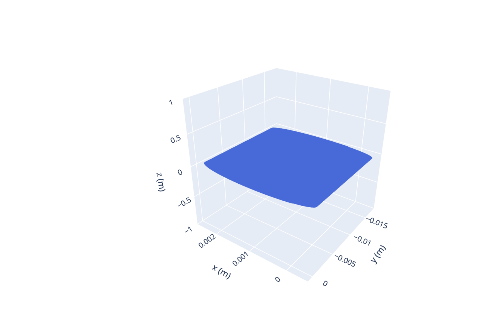
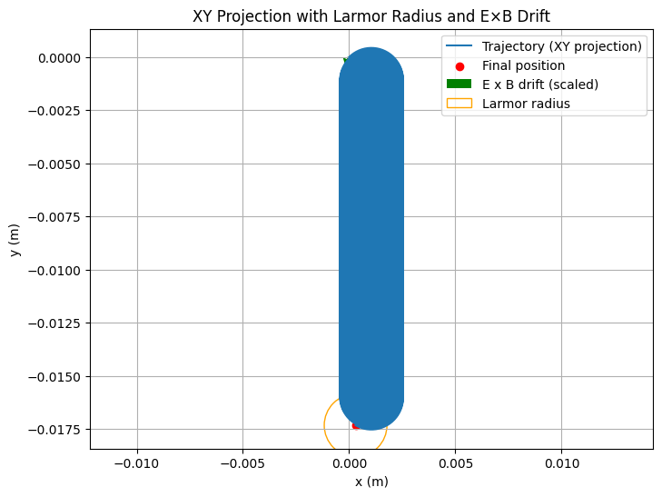

Problem 1
Simulating the Effects of the Lorentz Force on a Charged Particle — Extended Version
Introduction and Physical Background
The Lorentz force \(\mathbf{F} = q\mathbf{E} + q\mathbf{v} \times \mathbf{B}\) is fundamental for describing how charged particles behave in electromagnetic fields. This principle underlies technologies and natural phenomena such as:
- Particle Accelerators: Particles are accelerated and steered using magnetic and electric fields.
- Magnetic Confinement Fusion: Plasma particles spiral around magnetic field lines.
- Space Physics: Charged particles trapped in Earth's magnetosphere follow complex trajectories.
Key Physical Concepts
- Larmor Radius (Gyroradius): Radius of the circular motion of a charged particle in a magnetic field,
$$ r_L = \frac{m v_\perp}{|q| B} $$
where \(v_\perp\) is the velocity component perpendicular to \(\mathbf{B}\).
- Cyclotron Frequency: The angular frequency of gyration around magnetic field lines,
$$ \omega_c = \frac{|q| B}{m} $$
- \(\mathbf{E} \times \mathbf{B}\) Drift: When electric and magnetic fields are crossed (perpendicular), particles drift with velocity
$$ \mathbf{v}_d = \frac{\mathbf{E} \times \mathbf{B}}{B^2} $$
Numerical Simulation Setup
We solve Newton’s second law for the particle under the Lorentz force:
\[
m \frac{d\mathbf{v}}{dt} = q\mathbf{E} + q \mathbf{v} \times \mathbf{B}
\]
\[
\frac{d\mathbf{r}}{dt} = \mathbf{v}
\]
Python Code Implementation
import numpy as np
import matplotlib.pyplot as plt
from mpl_toolkits.mplot3d import Axes3D
import plotly.graph_objects as go
# Physical Constants (proton)
q = 1.6e-19 # Coulombs
m = 1.67e-27 # kg
# Simulation Parameters
dt = 1e-9 # seconds
num_steps = 15000
def lorentz_force(v, E, B):
return q * (E + np.cross(v, B))
def rk4_step(r, v, E, B, dt):
"""Runge-Kutta 4th order integration step for accuracy."""
def acceleration(vel):
return lorentz_force(vel, E, B) / m
k1v = acceleration(v)
k1r = v
k2v = acceleration(v + 0.5 * dt * k1v)
k2r = v + 0.5 * dt * k1v
k3v = acceleration(v + 0.5 * dt * k2v)
k3r = v + 0.5 * dt * k2v
k4v = acceleration(v + dt * k3v)
k4r = v + dt * k3v
v_next = v + (dt / 6) * (k1v + 2*k2v + 2*k3v + k4v)
r_next = r + (dt / 6) * (k1r + 2*k2r + 2*k3r + k4r)
return r_next, v_next
def simulate_motion(r0, v0, E, B, dt=dt, steps=num_steps):
r = np.zeros((steps, 3))
v = np.zeros((steps, 3))
r[0], v[0] = r0, v0
for i in range(1, steps):
r[i], v[i] = rk4_step(r[i-1], v[i-1], E, B, dt)
return r, v
def calculate_larmor_radius(v, B):
"""Calculate Larmor radius for each velocity vector."""
v_perp = np.linalg.norm(np.cross(v, B) / np.linalg.norm(B))
B_mag = np.linalg.norm(B)
if B_mag == 0:
return np.inf
return m * v_perp / (np.abs(q) * B_mag)
def calculate_drift_velocity(E, B):
"""Calculate E x B drift velocity."""
B_mag_sq = np.dot(B, B)
if B_mag_sq == 0:
return np.zeros(3)
return np.cross(E, B) / B_mag_sq
# Initial Conditions
r0 = np.array([0., 0., 0.])
v0 = np.array([1e5, 1e5, 0]) # m/s
# Field Configurations
# 1) Uniform Magnetic Field (Tesla)
B1 = np.array([0, 0, 1])
# 2) Uniform Electric Field parallel to B
E2 = np.array([0, 0, 1e3]) # V/m
# 3) Crossed E and B fields
E3 = np.array([1e3, 0, 0])
# Run simulations for the 3 cases
r1, v1 = simulate_motion(r0, v0, np.zeros(3), B1)
r2, v2 = simulate_motion(r0, v0, E2, B1)
r3, v3 = simulate_motion(r0, v0, E3, B1)
# Calculate Larmor radius for case 1 (should be roughly constant)
larmor_radius_1 = calculate_larmor_radius(v1[-1], B1)
# Calculate drift velocity for crossed fields case
drift_velocity = calculate_drift_velocity(E3, B1)
print(f"Larmor radius (final) in uniform B: {larmor_radius_1:.3e} meters")
print(f"E x B drift velocity in crossed fields: {drift_velocity} m/s")
# Plotting 3D interactive plot for crossed fields case using Plotly
fig = go.Figure(data=[go.Scatter3d(
x=r3[:,0], y=r3[:,1], z=r3[:,2],
mode='lines',
line=dict(color='royalblue', width=2)
)])
fig.update_layout(
title='3D Particle Trajectory in Crossed Electric and Magnetic Fields',
scene=dict(
xaxis_title='x (m)',
yaxis_title='y (m)',
zaxis_title='z (m)'
),
height=700,
width=900
)
fig.show()
# Additional Matplotlib plot showing Larmor radius and drift vector overlay
plt.figure(figsize=(8,6))
plt.plot(r3[:,0], r3[:,1], label='Trajectory (XY projection)')
plt.scatter(r3[-1,0], r3[-1,1], color='red', label='Final position')
plt.quiver(0, 0, drift_velocity[0]*1e-6, drift_velocity[1]*1e-6,
angles='xy', scale_units='xy', scale=1, color='green', label='E x B drift (scaled)')
circle = plt.Circle((r3[-1,0], r3[-1,1]), larmor_radius_1, color='orange', fill=False, label='Larmor radius')
plt.gca().add_artist(circle)
plt.title('XY Projection with Larmor Radius and E×B Drift')
plt.xlabel('x (m)')
plt.ylabel('y (m)')
plt.axis('equal')
plt.grid(True)
plt.legend()
plt.show()


Detailed Explanation of the Code
- Runge-Kutta 4th order (RK4): More accurate numerical integration method to solve the coupled differential equations of motion.
- Larmor Radius Calculation: Computes the radius of gyration to understand the tightness of the particle’s spiral.
- Drift Velocity Calculation: Quantifies the average velocity perpendicular to both fields.
- Interactive 3D Plot: Using Plotly to allow zooming, rotating, and exploring the trajectory from all angles.
- Matplotlib Plot: Overlays Larmor radius and drift velocity vector for intuitive understanding of particle behavior in crossed fields.
Physical Interpretation of Outputs
- The Larmor radius you see indicates the radius of the spiral path of the particle in the uniform magnetic field.
- The \(\mathbf{E} \times \mathbf{B}\) drift velocity vector indicates the net drift of the particle's guiding center perpendicular to both fields.
- The trajectory in crossed fields is complex, combining gyration and drift — important in plasma devices and astrophysics.
Suggestions for Further Extensions
- Relativistic Corrections: Modify equations for particles nearing the speed of light.
- Non-uniform Fields: Add spatial dependence to fields to simulate magnetic mirrors or traps.
- Collisions: Include effects of particle collisions and scattering.
- Multiple Particles: Study collective plasma behavior.
- Animations: Animate the particle trajectory with velocity vectors and field lines for teaching.